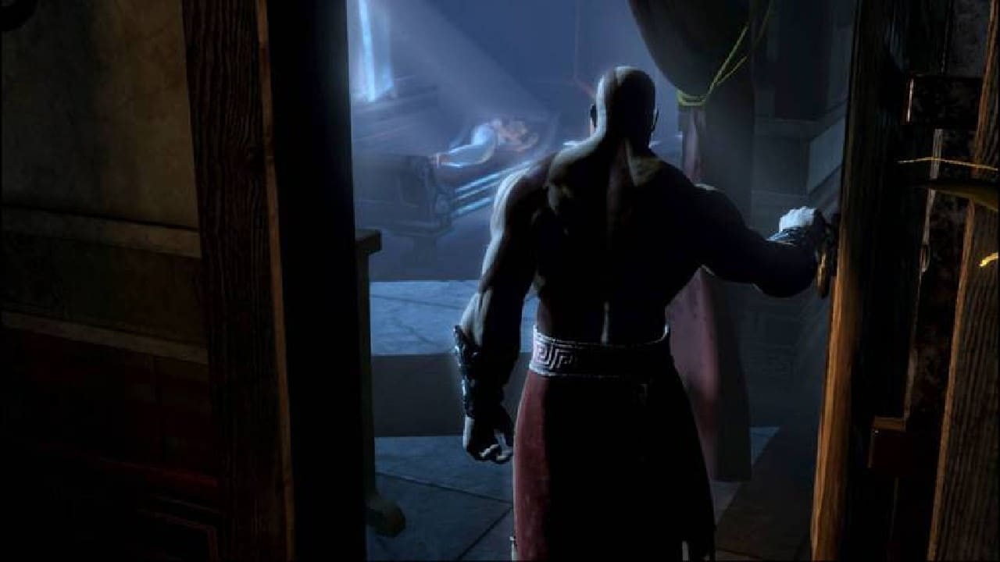

Em uma de suas buscas por prazer, Zeus acabou tendo uma noite de amor com uma grega chamada Callisto. O fruto da relação acabou dando vida a Kratos. Mas ele não foi a única criança que veio do ventre da mulher, visto que o grande rei do Olimpo voltou a visitá-la, e dessa segunda relação nasceu Deimos, irmão do protagonista de God of War. Deimos nasceu com uma marca vermelha em seu corpo e chamou atenção por ser um filho do maioral do Olimpo. Desde então, ele foi observado de perto pelos deuses.
Desde pequenos, os espartanos são treinados para se tornarem guerreiros implacáveis e destemidos. Kratos e Deimos, que ainda tinha marcas vermelhas espalhadas pelo corpo e já chamava a atenção por suas habilidades em batalha, treinavam e se esforçavam juntos. A rivalidade sadia entre os irmãos para destacar o “espírito espartano” foi demonstrada durante God of War: Ghost of Sparta. Em seus treinamentos, a coisa ficava feia, mas a irmandade era fortalecida a cada troca de socos.
No entanto, a vida dos filhos de Callisto teve uma reviravolta inesperada. Uma profecia começou a assombrar os bastidores do Monte Olimpo e os olhos divinos se voltaram para a dupla espartana. O destino teria preparado o fim dos deuses, mas surpreendentemente a queda do Olimpo não viria através dos Titãs, e sim de um dos filhos de Zeus, este mencionado como “o guerreiro marcado”. Assim como o deus dos trovões assassinou seu pai, o titã Cronos, o seu destino estava fadado a levá-lo ao mesmo destino. Ares e Atena foram designados para a tarefa de encontrá-los, e quando conseguiram, Deimos foi o escolhido devido às cicatrizes. A mãe de Kratos disse a ele que seu irmão teria sido morto e em honra a seu “suposto” falecimento, o jovem espartano marcou seu corpo com desenhos semelhantes aos de Deimos. Alguém escolheu o filho errado para dar fim à profecia.
A família de Kratos basicamente só nos é apresentada quando o espartano comete o erro que o faz jurar vingança contra o até então postulante do trono de deus da guerra, Ares. A saga dos feitos do Fantasma de Esparta rodaram o PS2, PSP, PS3, PS4 e agora chegarão ao PS5, mas passaram também por um formato em quadrinhos. No HQ, é revelado um pouco mais sobre a relação de Kratos com a sua família formada por Lyssandra e sua filha, Caliope. Ao descobrir que sua pequena contrai uma doença e a regra dos espartanos, que é implacável com a vida dos mais fracos e poderia tirá-la dos seus braços em breve, ele sai em busca da Ambrósia de Asclepius, esta com o poder de curar quaisquer ferimentos e doenças.
A “quase derrota” de Kratos Os fatos que antecedem o primeiro God of War contam a história de Kratos focada em sua ascensão. Após começar a ser reconhecido como um grande guerreiro que não apresenta misericórdia em seus embates, ele foi aclamado pelos seus superiores e temido por cada um de seus inimigos. No entanto, o espartano não venceu todas as batalhas que disputou somente com seus punhos. Alrik retorna após ser “abençoado” por Hades e esteve bem perto de assassinar Kratos, que fez um juramento ao deus da guerra oferecendo sua própria vida em troco da morte de seus inimigos. Atendendo ao pedido do espartano, Ares, o deus da guerra, desce do Olimpo e “presenteia” o guerreiro com as Lâminas do Caos, que serão um lembrete de seu juramento e são literalmente acorrentadas aos seus braços. Alrik é exterminado por Kratos, mas este agora serve à divindade que lhe pregaria uma bela de uma peça.
Após derrotar o exército do bárbaro, Kratos vagou por toda a Grécia a serviço de Ares matando soldados e inocentes sem pensar duas vezes. O olimpiano então, viu a chance de pregar uma peça no seu novo comandado. Possuído pela sua incontrolável fúria, ele não reconheceu sua própria família, que foi teletransportada pelo deus da guerra para dentro de um templo no qual foi ordenado a invadir e assassinar todos. Lyssandra e Caliope, infelizmente, perceram ali..
Prometendo se vingar de Ares e quebrando seu juramento, Kratos foi amaldiçoado pelo oráculo do templo e as cinzas de sua família o deixaram com a pele pálida. A partir dali, ele se tornou o Fantasma de Esparta.
Após quebrar a promessa com Ares, Kratos é caçado pelas Fúrias, a comando de Hades, o governador do submundo. Já que o guerreiro cometeu um crime divino ao quebrar uma promessa feita a um deus, o trio vai em busca dele para torturá-lo pelos seus feitos. Ao longo da jornada, o Fantasma de Esparta consegue, ao derrotar deuses menores como Pólux e Castor, e Orkos, o inocente oráculo, vencer o embate contra as Fúrias. Não satisfeito por estar livre de seu juramento, ele decide perseguir Perséfone, a mulher de Hades e mãe do trio que acabara de derrotar.
Na viagem ao submundo, a história de Kratos tem mais um capítulo no qual ele se vê em uma emboscada. Após derrotar o Basilísco do Rei da Pérsia, em busca de uma solução para o rapto de Hélios, o deus do Sol, em God of War: Chains of Olympus, a Rainha do Submundo é mais uma a mexer com a cabeça do espartano. A missão de acordar os deuses de um sono profundo que poderia dar um fim ao mundo, quase foi por água abaixo quando Perséfone apresenta Caliope, sua filha. Caso Kratos se rendesse, ele poderia viver com sua filha nos Campos Elíseos. Ao abrir mão de seus poderes, Kratos se dá conta que caso o mundo acabe no caos planejado pela deusa, de nada adiantaria estar ao lado de sua filha pois afinal de contas, tudo se perderia. O poder do espartano seria usado para destruir o pilar do mundo segurado pelo titã Atlas. O Fantasma de Esparta escolhe “salvar o mundo”. Kratos derrota a Rainha do Submundo, acorrenta Atlas ao seu dever de segurar o planeta e Hélios é salvo. O espartano cai do templo do deus do Sol, mas é resgatado por Atena. A história de Kratos, a partir deste ponto, é apresentada no primeiro jogo da franquia.
A história de Kratos, o Deus da Guerra Após fazer a “boa ação” de não cair nas mentiras de Perséfone, Atena concede a Kratos uma das grandes missões que mudará o futuro do Fantasma de Esparta. Depois de outros cinco anos vagando pela Grécia, as tropas do espartano são atacadas, enquanto velejavam por um pequeno presente de Ares: uma Hydra.
Kratos agora tem a nobre missão de salvar a cidade de Atenas, que está na mira do deus da guerra e tem como destino iminente a destruição. Unindo o útil ao agradável, o guerreiro concorda em participar da trama. Ao consultar um oráculo sobre a chave para derrotar Ares, a aventura nos leva para um deserto, onde Kratos terá de encontrar a Caixa de Pandora, que está em um templo fixado nas costas de Cronos. O titã derrotado pelos deuses vaga pelas areias do deserto sem rumo, como castigo.
Kratos tem de lidar com inúmeras ameaças, além das trapaças instaladas pelos labirintos e desafios. É aí onde ele prova ser digno de sua vingança. O espartano vence todos os desafios e chega até a Caixa de Pandora, mas Ares, lá da cidade de Atenas, consegue empalar o guerreiro que estava prestes a conseguir a chave de sua vingança. Ao bater no submundo, nada conseguiu segurá-lo, e o embate com o deus da guerra finalmente acontece.
Kratos acessa o poder da Caixa de Pandora e fica do tamanho de Ares. O deus da guerra é derrotado, e o pedido do guerreiro para que perca as suas dolorosas memórias é negado. Insatisfeito, ele se atira de um penhasco, mas Atena o salva e o designa como o novo deus da guerra.
Em uma curta passagem retratada novamente nos quadrinhos, a história de Kratos com a Ambrósia de Asclepitus tem outro capítulo. O deus da guerra fica sabendo que utilizariam o recurso que salvou sua filha para ressuscitarem Ares. Sem levar na esportiva que o ex-possessor do trono possa novamente dar as caras e atormentá-lo, o deus marcha até a fonte do milagroso remédio e acaba com tudo de uma vez por todas. A viagem coloca Kratos para pensar ainda mais em sua família.
O reencontro com sua mãe e Deimos God of War: Ghost of Sparta foi anteriormente citado neste especial sobre “A História de Kratos”, mas cronologicamente, esse fato se encaixaria melhor como um evento que antecede a sequência da saga do deus da guerra no segundo jogo da franquia. Após derrotar as Fúrias, Kratos soube que Deimos não era o “guerreiro marcado” que levaria a destruição ao Monte Olimpo. No entanto, Ares fez com que o Fantasma de Esparta servisse a seus interesses para poder tomar o Olimpo para si, assim que ele derrotasse Zeus. Obviamente, os planos foram frustrados no processo. O protagonista invade os Domínios da Morte para trazer seu irmão de volta, mas Tânato o deixou tão alucinado que Kratos fora parcialmente culpado por seu mártir e tortura que sofrera por tanto tempo. O Deus da Morte acaba matando Deimos.
Após a tentativa falha de salvar o irmão, Kratos reencontra sua mãe, Calisto, que em seus últimos suspiros, avisa ao espartano que o pai dos meninos era o principal culpado. Ao tentar revelar o nome de Zeus, ela se transforma em uma criatura horrenda e ele tem de lidar com ela.
Atena implora pelo perdão de Kratos, mas é tarde mais:
"Os deuses irão pagar por isso"
Enquanto Ares buscava pela aprovação dos deuses do Olimpo, Kratos agia de forma totalmente oposta. O desdenho do novo Deus da Guerra para com os seus iguais era algo que já incomodava os figurões de sua nova morada. Agora, além de líder do exército espartano, Kratos traz a benção única de um deus da guerra para o território e Esparta parte para conquistar toda a Grécia. Mesmo alertado por Atena, o guerreiro ataca a cidade de Rhodes. O próprio Zeus desce dos céus para dar um fim ao seu “querido” filho. Após drenar os seus poderes e cravar a Lâmina do Olimpo em seu peito, Hades puxa o Deus da Guerra para o submundo, mas outras divindades intervêm no processo e os Titãs entram em cena.
Gaia, a líder dos Titãs e a representante da natureza dentro os seus irmãos, junta forças com o guerreiro, que fica sabendo mais detalhes sobre a Grande Guerra que os levou à ruína. Mais uma vez, a história de Kratos o leva a aliar-se com sede de vingança. Agora ele deve enfrentar as Três Irmãs do Destino, que controlam o tempo e são encarregadas de deixar tudo acontecer como deveria. Depois de lidar com outros seres mitológicos da Grécia, o embate com as divindades acontece. O ex-deus da guerra é arremessado em um paradoxo onde as três quase mudam o rumo de sua luta com Ares que aconteceu no primeiro God of War. Mas ao derrotá-las e regressar no tempo para o exato momento em que Zeus cravaria a Lâmina do Olimpo em seu peito. A história de Kratos tem mais uma importante revelação. Quando ele se prepara para dar o último golpe no deus superior do Olimpo, Atena se sacrifica e revela ao protagonista que é sua irmã. Ligando os pontos e entendendo que era o filho de Zeus citado na profecia, o desejo de vingança do espartano não cessa. O Fantasma de Esparta volta para o presente e escala o Monte Olimpo com os Titãs para dar um fim à toda essa guerra.
Em God of War III, a história de Kratos chega ao que era, até então, seu desfecho definitivo. O jogo começa exatamente do ponto onde o seu antecessor parou, na escalada para o Monte Olimpo liderada por Kratos e Gaia. O primeiro a ser aniquilado pelo guerreiro é Poseidon, o deus dos mares. Ao ser jogado Olimpo abaixo, um fenômeno catastrófico inunda toda a Grécia.
Ao se aproximarem de Zeus, Gaia e Kratos sofrem um ataque que poderia ser fatal para os dois, mas somente o espartano levou a pior no evento. Gaia trai o Fantasma de Esparta e ele é despejado no submundo. O protagonista então, encontra o espírito de Atena enquanto procura uma maneira para sair do submundo e acaba, misteriosamente, recebendo ajuda da mesma para que ele consiga concluir o seu destino. No caminho de volta para o Olimpo, o Fantasma de Esparta derrota Hades, Helios, Hermes, Hercules, Hera e Cronos, e afunda o mundo todo em uma escuridão sem fim. Isso assola os humanos com todos os tipos de pragas deixando sem fronteiras o limite da morte e da vida, um caos total. A Caixa de Pandora volta à narrativa e a história de Kratos chega a seu ápice na Grécia. Após percorrer todo esse caminho em busca da Chama do Olimpo, ele consegue obtê-la, mas ela se encontra vazia. Sem tempo para lamentar pois logo após tudo isso, Gaia, Zeus e Kratos entram em seu último combate, que pode selar o destino dos deuses do Olimpo, Titãs e do mundo. O Deus dos Trovões invade a mente do espartano e tenta fazer com que ele se perca em suas culpas do passado, mas Pandora – sim, a da caixa – o leva de volta à realidade.
Kratos empala Zeus no coração de Gaia e a batalha chega ao seu clímax. Com o poder de sua recém-salvadora e a esperança de Atena, ele finalmente derrota o deus do trovão em uma épica batalha. Após perceber que Pandora confiou a ele o poder de restaurar o mundo, o espartano decide empalar a si mesmo para dar um fim a todo o egoísmo e desgraça entregue pelos deuses. Até ali, a história de Kratos teria dado um fim a esse tipo de divindade, mas somos surpreendidos com uma continuação.
A história de Kratos surpreende os fãs com uma continuação em terras inusitadas. Agora, ele está na presença de seres da mitologia nórdica. Com a morte de sua esposa, Faye, e uma criança chamada Atreus, seu filho, ele parte em uma aventura para honrar o último desejo de sua amada. O pedido dela? Que suas cinzas sejam jogadas do lugar mais alto entre os reinos. Por isso, a dupla parte em uma jornada à Jotunheim, o Reino dos Gigantes. A jornada serve como um aprendizado enorme para Atreus, que tem a lição mais valiosa de todas ensinada por seu pai:
"Não confie em deuses, garoto"
No decorrer da narrativa, o jovem tem sérios problemas de identidade que levam à revelação de sua divindade. Enquanto aprende a lidar com as responsabilidades de ser um ser superior aos demais, Atreus faz muita besteira e é cobrado pelo seu descontrole emocional. Se no começo do jogo, a insegurança e o desejo de se provar para seu pai tomam conta, no meio da jornada ele se rebela e chega a atacar seu pai quando estavam prestes a chegar à Jotunheim. A relação entre os dois é algo que evolui positivamente a partir do momento onde o garoto amadurece e passa a ser útil na sobrevivência da dupla. A história de Kratos o leva a lutar com deuses nórdicos como Baldur, os filhos de Thor e a arrumar sérios problemas com Freya, ex-mulher de Odin e mãe de Baldur. O jogo finaliza com mais uma profecia e a revelação de que a mãe de Atreus na verdade era uma giganta. Para dar um tempero ainda maior à narrativa, Kratos afirma que o desejo de sua mãe era nomeá-lo como Loki, mas ele insistiu em batizá-lo com um nome espartano.
Ao retornarem do Reino dos Gigantes, a história de Kratos apresenta o que pode ser mais um “fim do mundo”. Agora, as evidências do Ragnarok farão com que o Fantasma de Esparta passe por mais provações divinas para sacramentar a sua lenda em terras nórdicas.
God of War: Ragnarok, se passa três anos após o evento do jogo de 2018, com Atreus um pouco mais velho enquanto tenta entender suas origens e a importância de seu nome de batismo — Loki. A busca por respostas vai desencadear no auge do Ragnarok, o fim dos tempos Nórdicos. Kratos auxilia seu filho em sua jornada por explicações, acompanhado novamente da cabeça de Mimir. Em algum momento de sua busca os personagens irão se encontrar com Tyr, o Deus da Guerra Nórdico. Ele foi mencionado no jogo anterior, onde todos acreditavam que estava morto, mas que estava somente preso e será resgatado por Kratos — para ser um aliado ou inimigo. Com o Ragnarok se aproximando a guerra contra Asgard é inevitável e novos inimigos estão no caminho de Atreus. Um deles é Thor, que já apareceu por um breve momento em uma cena pós-créditos do jogo anterior. Mas rivais antigos também estão presente. Freya, que jurou destruir Kratos e seu filho após derrotarem Baldur, está de volta. Anteriormente uma aliada, a personagem nutre uma grande ira contra os protagonistas e faz de tudo para vingar a morte de seu descendente.